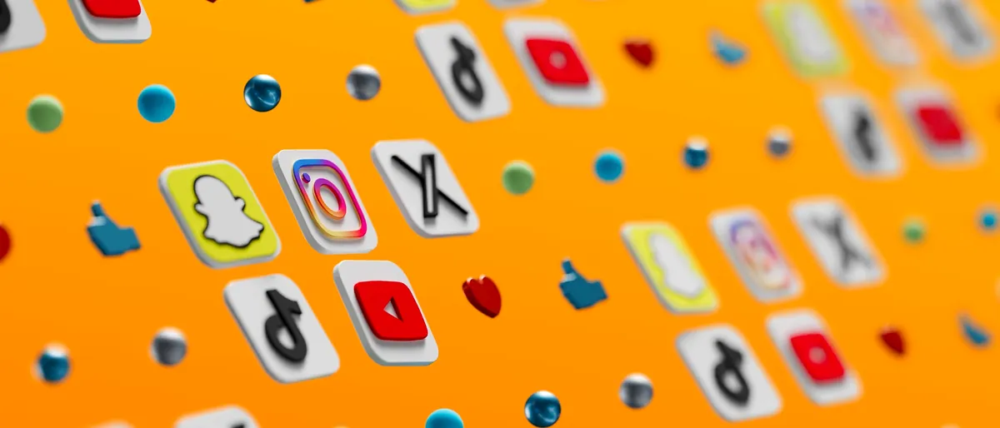

« Il faut être sur tous les réseaux » : c'est le meilleur moyen de s'épuiser et de ne rien obtenir. Pour une PME, mieux vaut un ou deux canaux bien choisis et bien tenus que cinq comptes abandonnés.
Commencez par vos clients, pas par les plateformes
Avant de choisir un réseau, répondez à trois questions :
- Qui voulez-vous atteindre (particuliers, entreprises, recruteurs) ?
- Où passent-ils du temps et que cherchent-ils ?
- Pourquoi publier : notoriété, demandes de devis, réservations, recrutement ?
Panorama des principaux canaux
- LinkedIn : services aux entreprises, expertise, recrutement, réseau professionnel ;
- Instagram : offres visuelles (bien-être, mode, restauration, artisanat, design) ;
- Facebook : communauté locale, événements, groupes, publicités à large audience ;
- TikTok, Reels, Shorts : vidéo courte, notoriété auprès de publics plus jeunes ;
- YouTube : tutoriels, démonstrations, contenus qui restent utiles longtemps ;
- Google Business Profile (pas un réseau social, mais indispensable pour une activité locale).
Un tableau de décision simple
- Vous vendez à d'autres entreprises : LinkedIn en priorité ;
- Votre offre se montre en images : Instagram, complété par de courtes vidéos ;
- Vous avez un lieu physique : Google Business Profile + Instagram ou Facebook ;
- Vous expliquez un savoir-faire : YouTube et un blog sur votre site.
Organique ou publicité ?
Les publications organiques construisent la confiance et la régularité ; la publicité permet de toucher plus vite une cible précise. Commencez par un petit budget pour tester un message, observez les résultats, puis ajustez. Une campagne se pilote : audience, message, visuel, page de destination et suivi des résultats.
Un rythme que vous pouvez tenir
- Choisissez un à deux canaux au départ ;
- Planifiez un calendrier éditorial simple (par exemple une à trois publications par semaine) ;
- Alternez les contenus : preuves (réalisations, avis), coulisses, conseils, offres ;
- Privilégiez la régularité au volume.
Mesurer ce qui compte
Les « j'aime » flattent, mais ce sont les actions qui comptent : clics vers votre site, messages, appels, demandes de devis, réservations. Utilisez des liens de suivi (paramètres UTM) pour savoir quelle publication amène quel visiteur.
Exemple de calendrier sur quatre semaines
- Semaine 1 : présentez votre activité (qui vous êtes, ce que vous faites, pour qui) ;
- Semaine 2 : montrez une preuve : une réalisation, un avis, un avant/après ;
- Semaine 3 : partagez un conseil pratique qui répond à une question fréquente ;
- Semaine 4 : proposez une offre ou un appel à l'action clair, puis faites le bilan.
Quels indicateurs suivre selon l'objectif
- Notoriété : portée, nouveaux abonnés ;
- Trafic : clics vers votre site (liens de suivi) ;
- Contacts : messages, appels, demandes de devis ;
- Ventes : réservations, coût par résultat.
Relier réseaux sociaux et site web
Chaque publication devrait mener quelque part : une page claire, rapide, avec un appel à l'action. Un réseau social attire, votre site convertit. C'est la logique de nos campagnes digitales : un message, une cible, une page de destination, des résultats suivis. La formule PMEPro inclut deux campagnes sur les réseaux de votre choix. Besoin d'aide pour choisir vos canaux ? Parlons-en.
Sources et pour aller plus loin
- Choisissez un ou deux réseaux selon vos clients et votre objectif, pas selon la mode.
- La régularité compte plus que le volume : un compte inactif nuit à votre image.
- Mesurez les actions (clics, messages, devis), pas seulement les « j'aime ».
FAQ
Combien de réseaux sociaux une PME doit-elle utiliser ?
Un à deux pour commencer, choisis selon vos clients et votre objectif. Vous pourrez en ajouter un autre quand le premier tourne de façon régulière.
Faut-il payer pour être visible sur les réseaux sociaux ?
Ce n'est pas obligatoire, mais la portée organique est limitée. Un petit budget publicitaire bien ciblé permet souvent de tester et de toucher plus vite votre clientèle.
À quelle fréquence faut-il publier ?
Une à trois publications par semaine suffisent pour commencer, si vous pouvez les tenir dans la durée. La régularité et la qualité priment sur la quantité.
À lire aussi
Tous les articles


Un projet de site ou de visibilité ?
Un premier rendez-vous gratuit pour faire le point sur vos besoins et votre budget.
Prendre rendez-vous